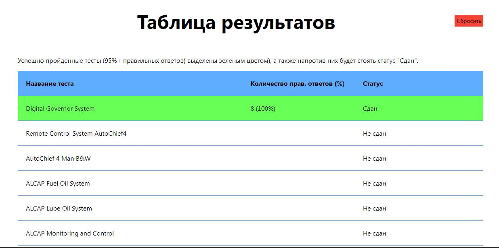
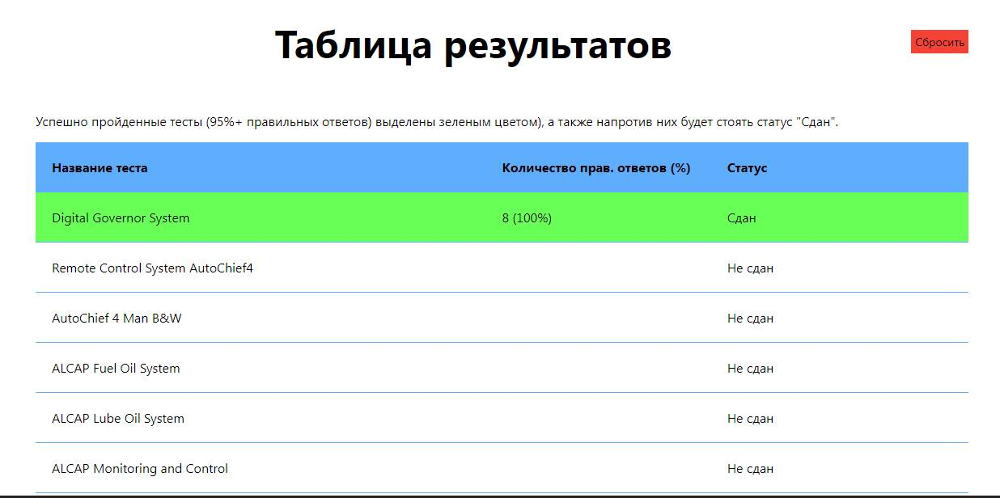
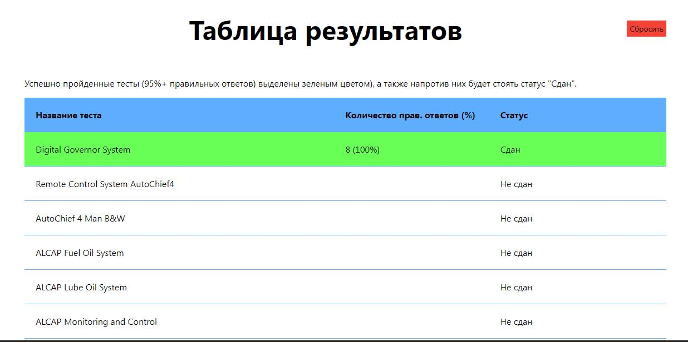

Эксклюзивное приложение от Sea-Man.Org для тестирования моряков, объединяющее в себе вопросы из большого количества тестов по темам, относящимся к морской инженерии.
Операционная система: Windows 7, 8, 10
RAM: 1 GB
Видеокарта: любая
Место на диске: 174 mb
Описание: Сборник тестов из комплекса Seagull CES CBT - Marine Engineering (v5.0), в который вошло 27 тестов, в общей сложности составляющих 787 вопросов.
Во время прохождения тестов, если какие то вопросы вызывают затруднения, всегда можно взять подсказку, или свериться с базой данных вопросов и ответов.
По прохождении теста результат будет внесен в таблицу ваших личных рекордов, которую также можно наблюдать в программе.
27 CES тестов комплекса Seagull CBT

Программа, и весь ее функционал предоставляется абсолютно. Если она вам понравилась и оказалась полезной, а также если вы заинтересованы в появлении новых релизов, в которых будут тесты из других CBT, или может быть даже из других систем тестирования, вы можете поддержать разработчиков переведя на один из наших реквизитов любую сумму.
Поддержать разработчиков:
Обо всех найденных багах, а также если у вас есть предложения/пожелания, вы можете написать нам на один из электронных адресов:
Спасибо что заинтересовались и скачали нашу программу. Надеемся, что она поможет вам в подготовке к экзаменам, либо просто скоротать время с пользой в одном из рейсов.